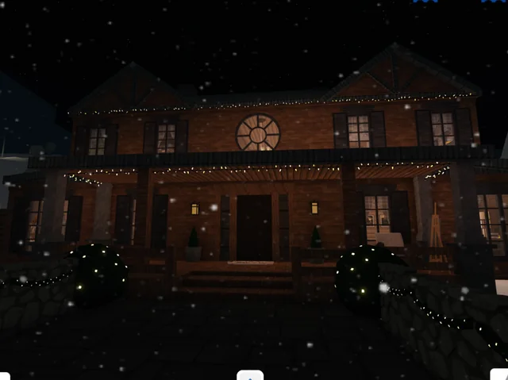
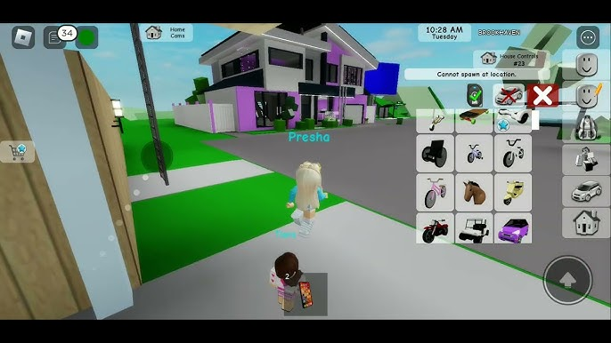
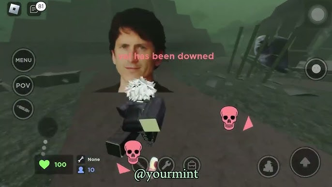

Galería de Imágenes
Un hermoso paisaje del municipio.
Instalación de paneles solares en el centro cívico.

Una pequeña foto del ayuntamiento de noche

Algunas imagenes de la naturaleza

Casas del pueblo.

Camino por el campo